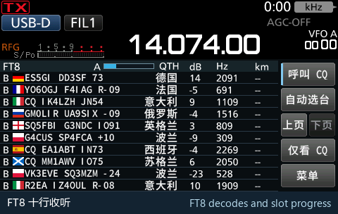

IC-705 固件转换器
选择日版 1.40 原厂 DAT，在本机生成 CW、SSTV 与 FT8／FT4 固件。原厂文件只在浏览器内处理。
电台模拟操作演示
从 MODE → FT8/4 进入，查看十行收听页、CQ 待发与发射状态，再看已完成的通联日志。
在 CW 模式下，按 MENU → KEYER → CW DECODE，查看模拟接收信号译出的 CQ。
从主界面按 MENU → 第 2 页 → PICTURE → SSTV，点 RX 预览，观看 Robot 36 图像逐行接收。

- 原厂底包
- IC-705 日版 1.40
- 目标版本
- …
下载 Icom 日版 1.40 原厂固件 ↗
手动保存 705J140.dat ↓
生成文件在 SD 卡上的保存路径为 IC-705/705J140.dat